Steward
分享是一種喜悅、更是一種幸福
掌機 - Nintendo New 3DS - 簡要規格
第一代3DS作工品質確實相當不錯，不過，可能為了區隔產品線，新的3DS竟然做成一台寨機品質的掌機
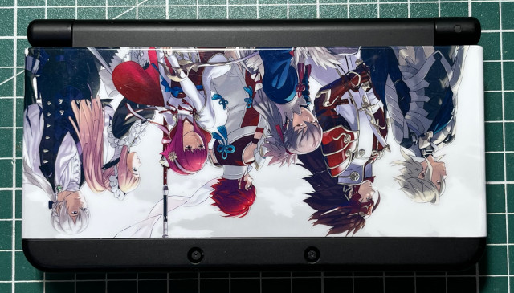
遊戲卡槽放在下方真的很影響手感，設計師應該是沒玩過遊戲
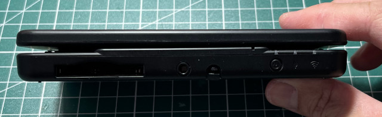
蓋起來的樣子是呈現開口笑狀態
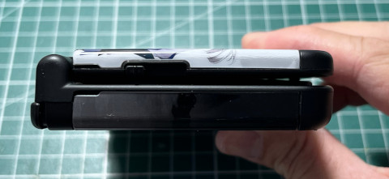
上邊
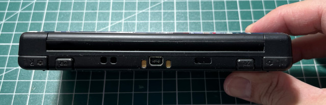
側邊
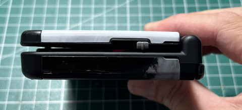
這是最漂亮的一面，不過那個十字鍵真的太下沉了
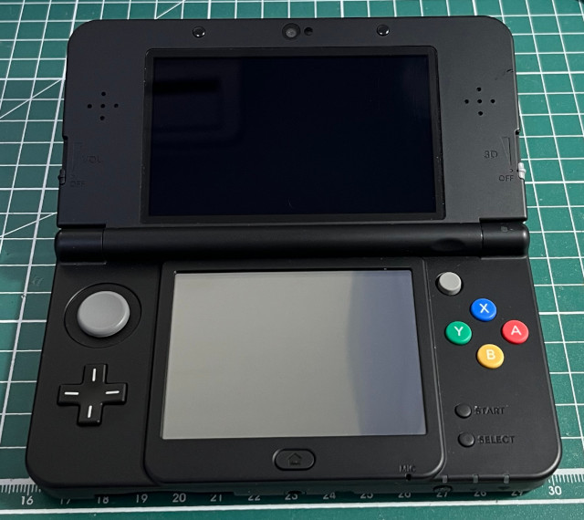
漂亮的面板，這個真的不適合放在背面，因為面板縫隙會影響手感
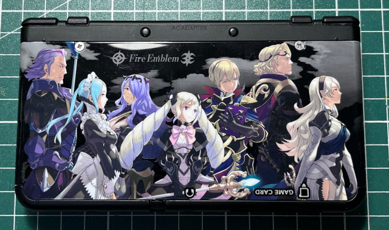
拆掉面板螺絲才可以取出MicroSD，真是相當奇特的設計模式
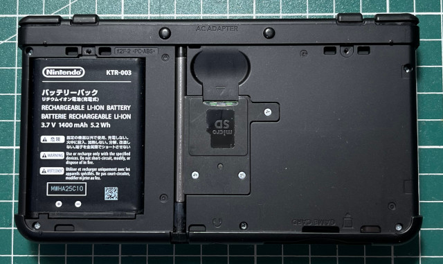
上面那個是司徒重新購買的延長觸控筆，這個設計師可能沒玩過觸控遊戲，不知道筆要如何設計
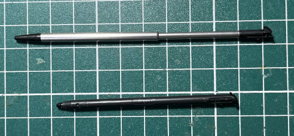
3.7v 1400mA
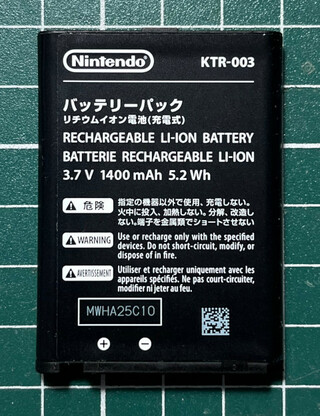
MicroSD
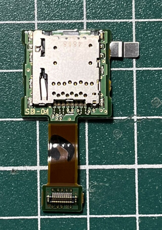
背面
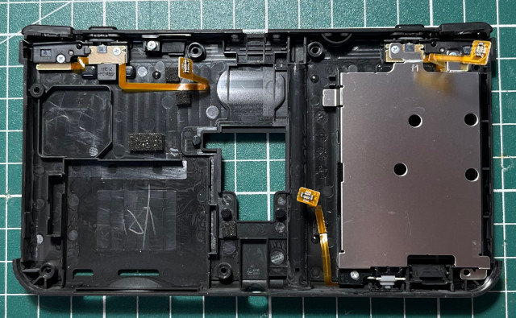
PCB
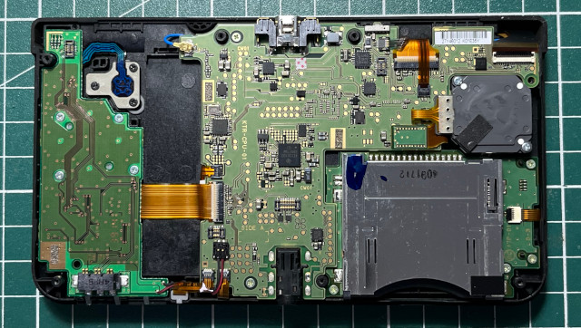
TD1440、AIC3010D、TSD436C
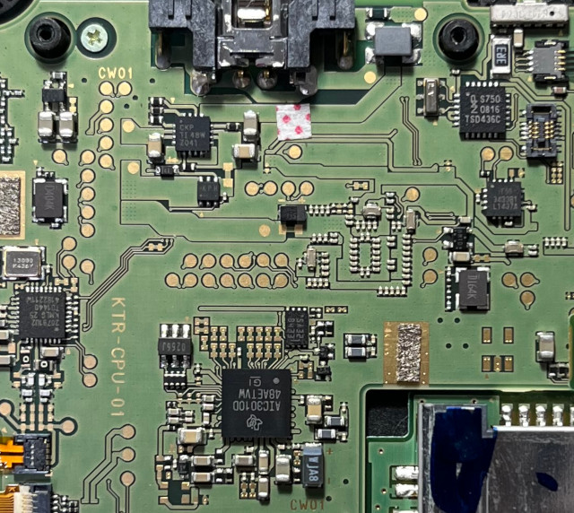
PCB
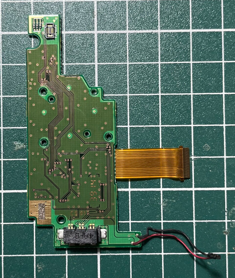
434AA HF374
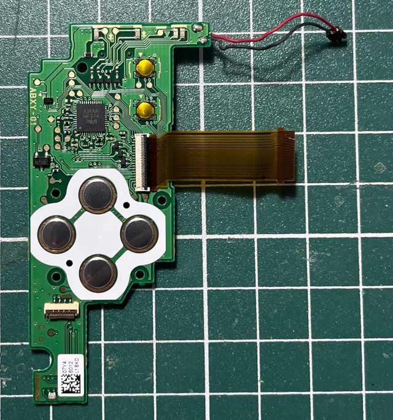
C鍵
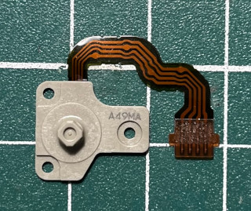
類比搖桿
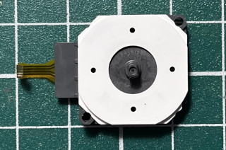
正面
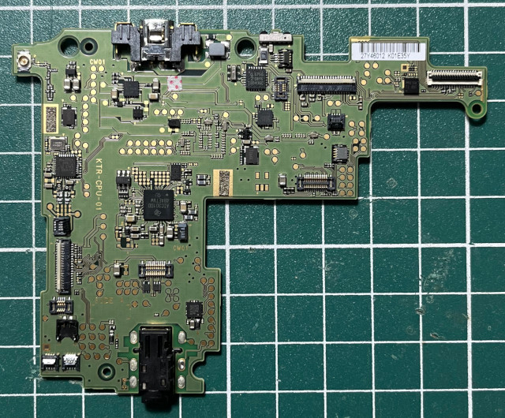
背面
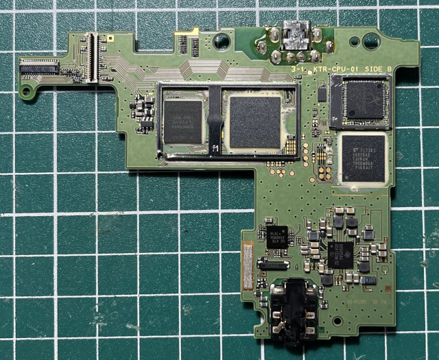
AR6014G-AL1C、FL7363 14379AE THGBMBG4 P1KBAIT、93045A4 46A1S3W、CPU LGR A、KTR 434KM04、82MK9A9A
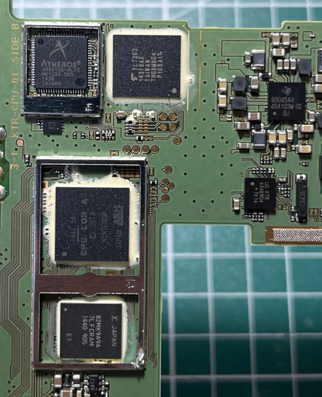
遊戲卡槽
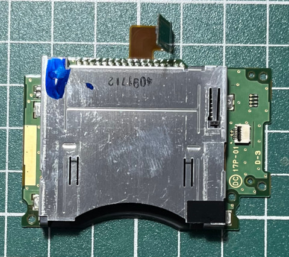
十字鍵
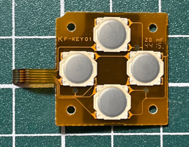
在觸控屏下方的未知東西
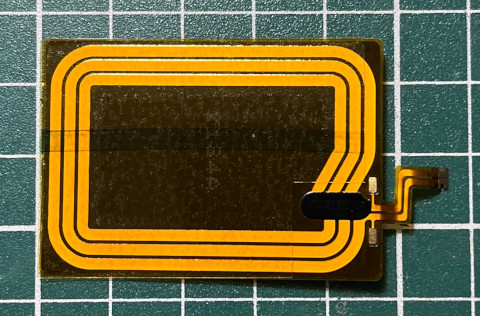
觸控屏
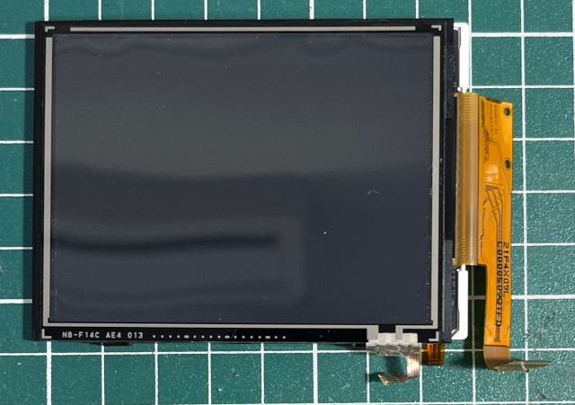
FPC
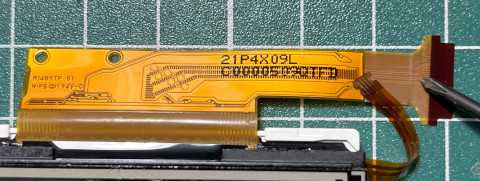
屏
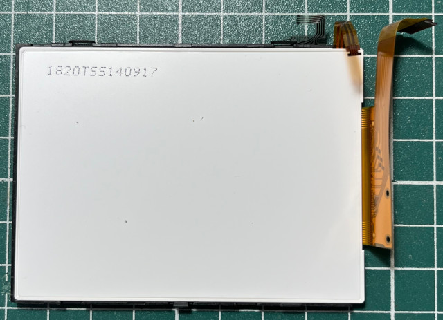
前蓋
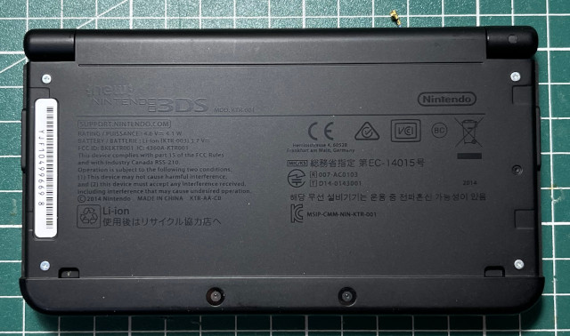
面板
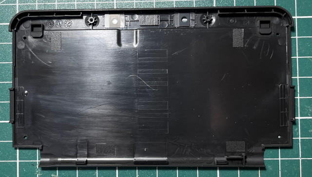
屏
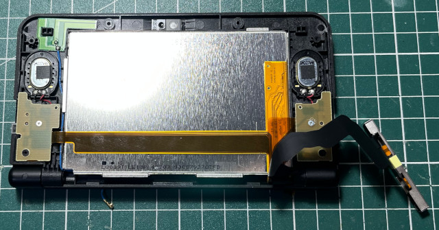
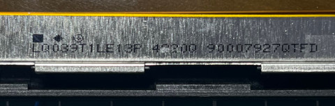